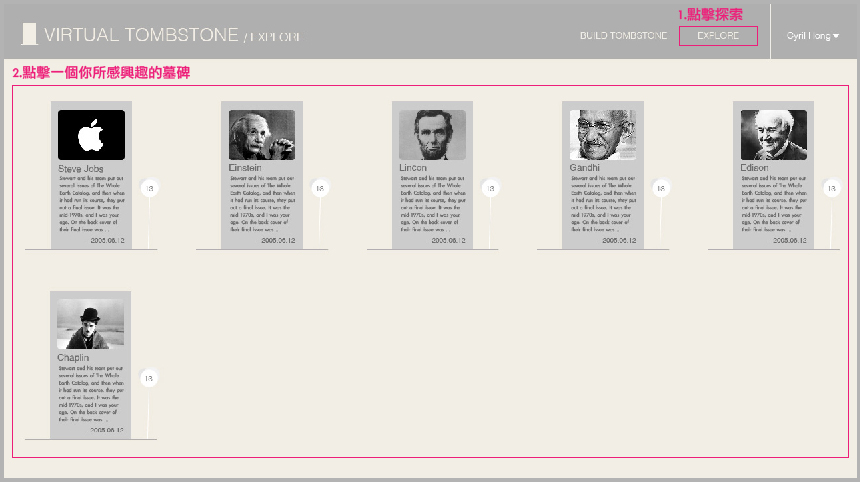
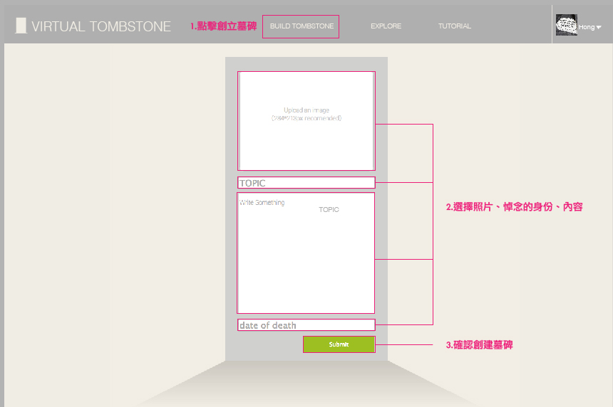
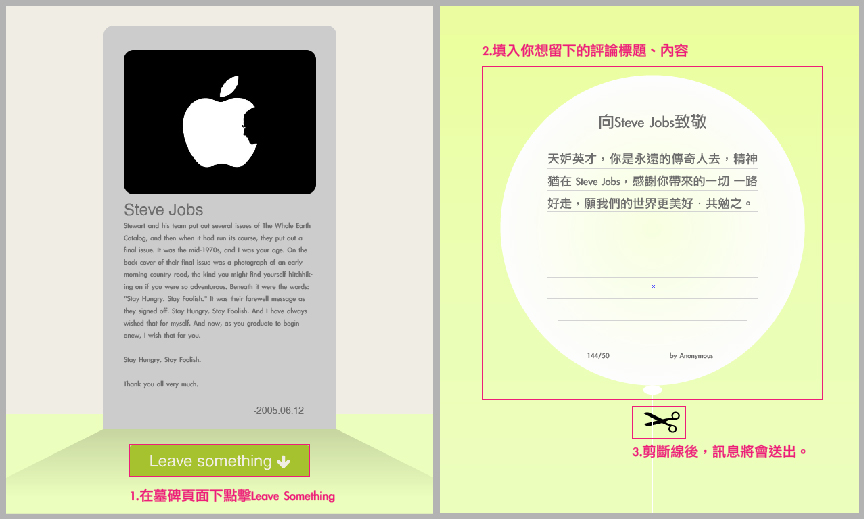

什麼是VIRTUAL TOMBSTONE?
VIRTUAL TOMBSTONE是一個網路互動創作計劃，使用者創立死去身分的墓碑，借由鬼魂一般的體驗來與其他人建立連結關聯。由於網路的發展，身分的創造以及死去比過去來得多與快，而此創作正視身分死去的這個議題，來觀察人與人之間的互動關係。數位墓碑會藉著互動的資料搜集、共創結論，來產生出視覺回饋。
VIRTUAL TOMBSTONE不單單是讓逝者身後下了註腳的儀式，而是讓所有人都能參與其中，不管你們關係是否熟識，或根本素昧逢生，網路的立即性與回饋性可以快速地讓兩者產生交流。也許身分的死亡的定義不單是生命的終結，也可能是身分的轉換、人生的階段、時刻的紀念。
使用者可以借由註冊登入，創立一個獨一無二的墓碑，它可以是你對於自我身分的認同，也可以是已不存在的人物角色。在眾多的數位墓碑中，你可以探索你感興趣的墓碑，借由象徵性的氣球訊息、預示性的使用介面，剪斷與我們繫結在地表的線，飛到墓碑主人的所在處，不管是在佛教的西方世界或是基督教的天堂，在數位空間中，那是一個新的起點與終點。
VIRTUAL TOMBSTONE創作論文開放源代碼: https://github.com/cyrilhong/virtualtombstone該如何使用VIRTUAL TOMBSTONE?
一.EXPLORE-探索感興趣的墓碑
該如何使用VIRTUAL TOMBSTONE?
二.BUILD TOMBSTONE-創立墓碑
該如何使用VIRTUAL TOMBSTONE?
三.LEAVE SOMETHING-在墓碑頁面留下評論
